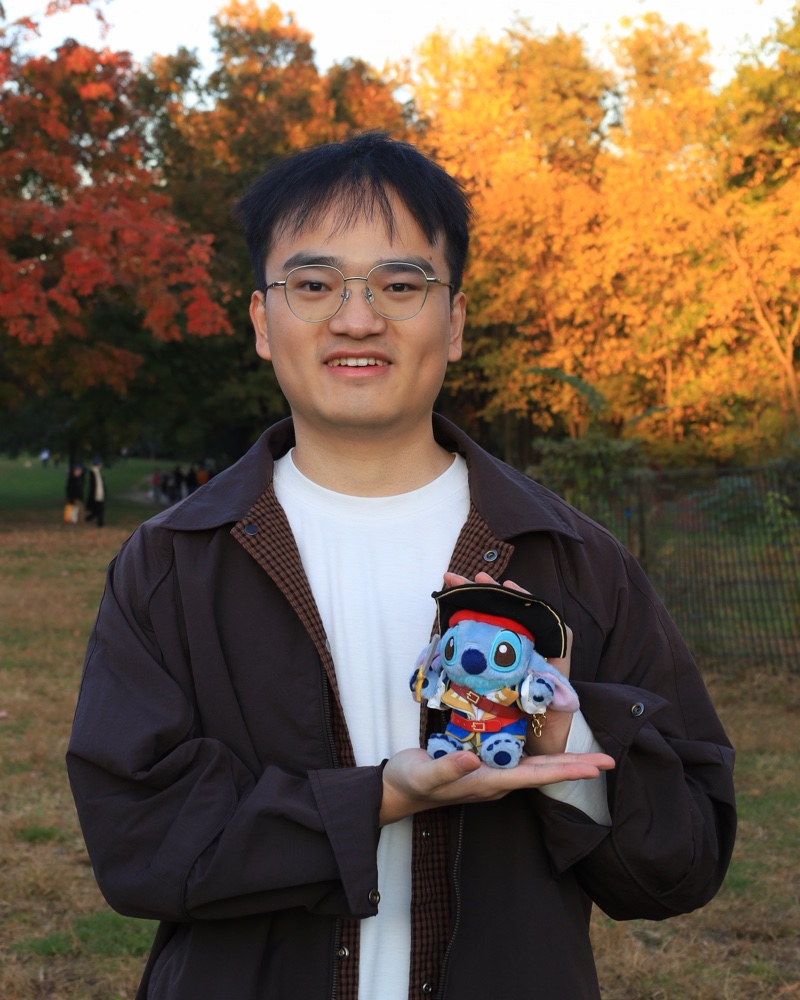

Zeshen Zhang
I am an M.S. student in Computer Science at the NYU Tandon School of Engineering, expected to graduate in January 2027. I received my B.S. in Computer Science and Technology from Tongji University in 2025. I work on machine learning systems.
I have been fortunate to work with Prof. Han Zhao (Shanghai Jiao Tong University) and Prof. Yucheng Lu (NYU Shanghai).
I am applying to PhD programs for Fall 2027.
Email / Google Scholar / GitHub / LinkedIn

New York University, Tandon School of Engineering, M.S. in Computer Science, expected Jan. 2027
Tongji University, B.S. in Computer Science and Technology, 2025